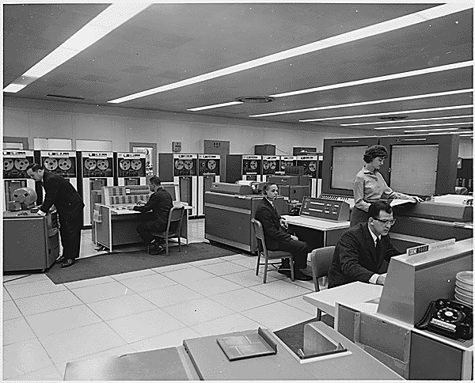

La révolution Cloud Computing
De nos jours Internet est partout : de nos ordinateurs à nos frigos, tout est connecté. Mais pouvons-nous imaginer un monde où toutes nos données sont stockées à distance ? Un monde où nos appareils deviennent de simples terminaux ?
De quoi s’agit-il ?
Le nom “Cloud” vient de la métaphore du nuage symbolisant le web, intouchable, qui déverse une pluie de
données. Le terme “Cloud Computing” désigne le traitement et stockage des données sur Internet. Il est
apparu dans les années 90 avec l’avènement d’Internet, mais le concept est né dans les années 50 avec
les Ordinateurs Centraux.

Ce type d’ordinateur, aussi particulier soit-il, est très certainement l’un des ancêtres du concept du
Cloud-Computing. En effet dans les années 60, certaines grandes entreprises ou Institution publique
utilisaient un ordinateur central. Le principe était simple : avoir un ordinateur très puissant, et le
rendre utilisable par plusieurs personnes en utilisant des terminaux : de simples afficheurs. La
puissance était déportée. La sera-t-elle à nouveau dans un futur proche ?
Le Cloud Computing signifie-t-il alors le retour à l’ordinateur central ?
Aujourd’hui, le secteur est en plein essor : en 2016, Amazon a généré 12,2 milliards de chiffre d’affaire avec sa filiale Amazon Web Services. Cela représente une progression de 55% sur un an (source : Les Echos). Il prend majoritairement la forme d’un service en ligne sous forme de pages web. Google, pionnier auprès du grand public, propose une suite de logiciels de bureautique “Google Docs”, disponibles depuis n’importe quel navigateur ; ou appareil compatible ; contrairement aux données stockées localement.
Dans le privé
Le Cloud Computing concrétise l’utilisation de programmes distants via un navigateur web. Spotify et Google Docs permettent respectivement : d’écouter de la musique sans support et d’éditer des documents seul ou à plusieurs. Ces applications appartiennent à un type de Cloud nommé SaaS (Software as a Service) : ce sont des applications où l’utilisateur n’a besoin d'aucune installation ou configuration pour s’en servir.
Dans le milieu professionnel
Les PME et TPE sont clientes du Cloud. Elles ne le produisent pas. En France les PME/TPE utilisent deux types de Cloud :
- Le PaaS (Platform as a Service), c’est-à-dire la location d’une machine virtuelle distante. Le client ne s’occupe pas du système il se concentre sur l’implémentation de ses applications.
- Le IaaS (Infrastructure as a Service) la location de toute une infrastructure réseau. Cela requiert des compétences techniques de gestion d’un système d’information.
Les PME/TPE peuvent aussi se servir de SaaS mais moins orientés grand public. L’utilisation du Cloud chez les PME/TPE a largement progressé ces dernières années. C’est la conséquence des nouvelles opportunités offertes par le Cloud Computing. L’adoption du Cloud se concrétise en plus-value. Le Cloud permet de réduire les investissements techniques et d’adapter le coût du système d’information, de façon flexible, selon les besoins. Outre des formations potentiellement nécessaires pour certains employés, le C.C représente une aubaine pour les PME/TPE en leur permettant de se développer plus vite et plus efficacement. Pour les grandes entreprises du secteur du numérique, le Cloud Computing est aussi une aubaine. Ces entreprises produisent du Cloud Computing de tous type (IaaS, PaaS, SaaS) et en consomment. Elles sont donc gagnantes sur deux tableaux. Les G.E productrices de Cloud Computing, sont celles du secteur du numérique : Microsoft, Amazon, IBM, Cisco…. Elles mettent leur expertise au service de leur client (les PME/TPE), pour proposer des services stables, rapides, et plus sécuritaires. La répartition de la puissance de calcul leur permet de mieux gérer leurs infrastructures afin de maximiser les profits. Ainsi le chiffre d’affaire du secteur a progressé de 28% en 2015 pour atteindre 110 milliards de dollars (source : Synergy Research Group). Il apparaît évident que le secteur est en pleine expansion et les entreprises qui n’emboitent pas le pas risque de se retrouver dépassées.
Gagner la confiance du marché

Il est évident que le Cloud Computing possède de nombreux avantages tant économiques que pratiques ou techniques. Malgré tout, les utilisateurs du Cloud Computing perdent en contrôle sur leurs données et deviennent dépendants d’un tiers. Ils sont dépendants d’un réseau faillible, qui ne leur appartient pas. Il est facile de trouver critiques au Cloud Computing. Bien que certaines entreprises soient rédhibitoires, il est important de rappeler que les entreprises signent des contrats de prestations de services. Cela signifie qu’il y a un engagement entre deux parties. Par conséquent, l'entreprise cliente ne veut pas perdre ses données, avoir un bon taux de disponibilité, et l’entreprise vendeuse veut respecter son contrat. Le rapport est équilibré.
A l'aube d'une nouvelle ère
Le Cloud Computing constitue une révolution pour les entreprises qui le produisent ou celles qui l’utilisent, tant du point de vue technologique que du point de vue économique. Dès aujourd’hui, il est crédible d’imaginer un futur où la puissance locale perd de l’importance, un futur ou nos ordinateurs deviennent des terminaux, comme à l’époque de l’ordinateur central. Quoiqu’il en soit, le Cloud Computing a un avenir radieux, et ne risque, en aucun cas, de disparaître. Le secteur du numérique semble finalement être un renouvellement sans fin...